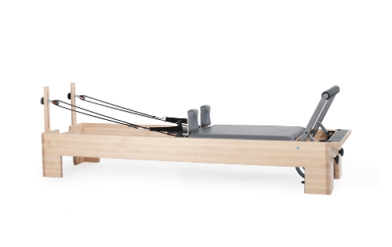
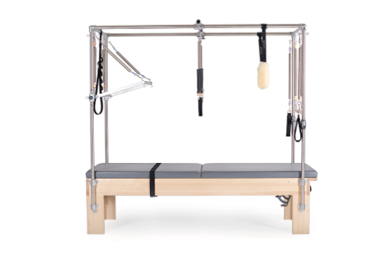
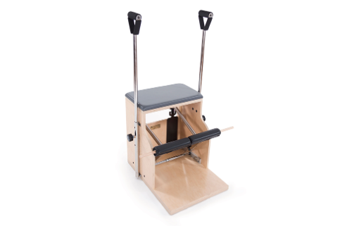
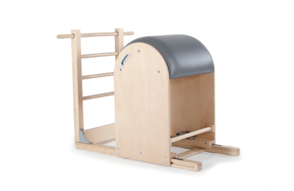
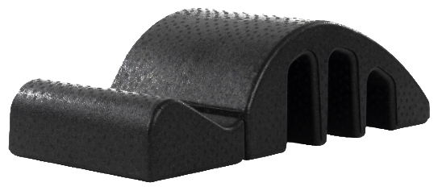

首頁 / 器械介紹
皮拉提斯器械
五台器械，
差在哪？
差在哪？
大家說的「器械床」，通常指的是核心床。
每台都靠彈簧或弧面幫你，差別只在「練哪裡」。
每台都靠彈簧或弧面幫你，差別只在「練哪裡」。
不用自己選，老師會依你的身體幫你挑
沒有哪台最好，適合你的最好
器械不是越大台越難，是越懂你越有效
第一次來不用會，彈簧會先幫你一把


01新手首選・大家說的「器械床」
核心床
Reformer
一張會前後滑動的床，靠彈簧給你支撐或阻力。躺、坐、跪、站都能練，最容易上手。
全身訓練核心穩定體態改善
適合：第一次接觸、想全身都鍛鍊的人
02支撐最多
凱迪拉克
Cadillac
床面固定不動，上方鐵架掛著彈簧和推桿，從不同角度幫你一把，身體很緊也能安心動。
伸展放鬆脊椎活動被協助的訓練
適合：身體很緊、需要更多支撐


03最有挑戰
穩踏椅
Chair
一張帶彈簧踏板的小椅子，支撐面小，身體要自己找到穩定，最能練出平衡感。
平衡感腿力核心控制
適合：想練平衡、腿力、有一點基礎的學員
04把背打開
梯桶
Ladder Barrel
一邊是梯子、一邊是大弧面的木桶，身體順著弧度後仰、側彎，安全地把久坐僵硬的背打開。
背部伸展髖關節柔軟腿後側
適合：久坐、背很僵、髖很緊


05輕巧好上手
脊椎弧桶
Spine Corrector
放在墊上的小弧形器材，貼合脊椎的曲線，躺上去就能感覺胸口被打開。
改善圓肩脊椎活動度腹部核心
適合：圓肩駝背、想加強核心
第一次來
第一次上課，
不用先選器械
不用先選器械
你只要專心感受身體，
剩下的交給老師。
剩下的交給老師。
老師會幫你挑
先做體態評估，看你的肩膀、骨盆、腿型，再決定今天用哪台器械、彈簧要多重。
上課前先告訴老師
• 有沒有受過傷、開過刀
• 哪裡會痛、痠、麻
• 是否懷孕或產後
• 有沒有高血壓、骨質疏鬆等狀況
• 哪裡會痛、痠、麻
• 是否懷孕或產後
• 有沒有高血壓、骨質疏鬆等狀況
下一步
看懂器械後，
下一步讓老師看懂你。
下一步讓老師看懂你。
從一堂首次體驗開始，找到最適合你的器械。